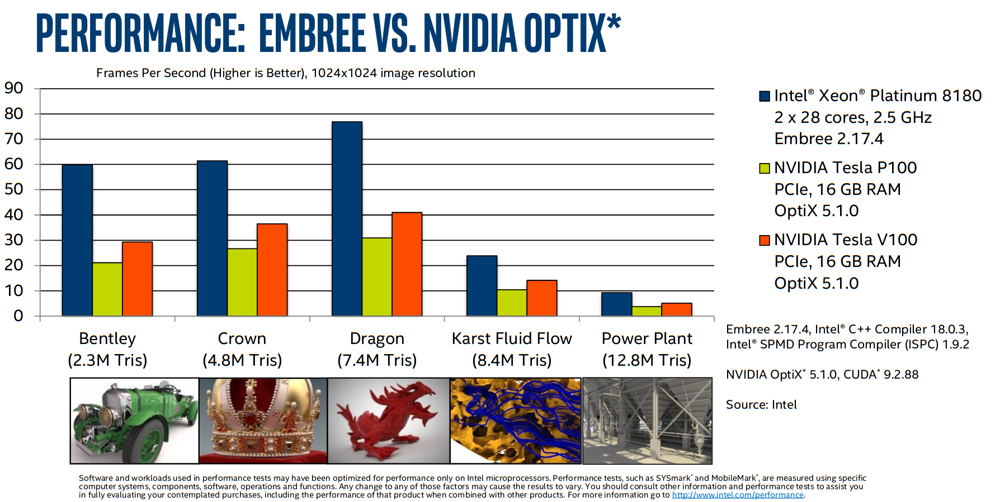

29) ISPC, OpenMP target, OpenACC, and all that#
Last time:
Parallel reductions with CUDA.jl
Different strategies of optmization on the GPU
Today:
ISPC
OpenMP target offload
2.1 TerminologyOpenACC
Architecture |
Directives |
SIMD |
SPMD |
|---|---|---|---|
Intel AVX+ (SIMD) |
|
||
CUDA (SIMT) |
|
C++ templates and other high-level APIs |
CUDA |
1. ISPC: Intel SPMD Program Compiler#
The Intel Implicit SPMD Program Compiler (ISPC) is a compiler for writing single program multiple data (SPMD) programs to run on the CPU and GPU.
The SPMD programming approach is similar to approaches used in computer graphics and general-purpose-GPU programming; it is used for GPU shaders and CUDA and OpenCL (standard for cross-platform, parallel programming of heterogeneous systems) kernels, for example.
The main idea behind SPMD is that one writes programs as if they were operating on a single data element (a pixel for a pixel shader, for example), but then the underlying hardware and runtime system executes multiple invocations of the program in parallel with different inputs (the values for different pixels, for example).
In summary, we can program SIMT (e.g., CUDA) devices using directives, but we can also program SIMD (e.g., Intel CPUs) using a SPMD (recall, the CUDA-like, acronym that comes from “single program” versus “single instruction”) programming model.
1export void simple_ispc(uniform double vin[], uniform double vout[],
2 uniform int count) {
3 foreach (index = 0 ... count) {
4 double v = vin[index];
5 if (v < 3.)
6 v = v * v;
7 else
8 v = sqrt(v);
9 vout[index] = v;
10 }
11}
This function is callable from native C code. Example:
1#include <stdio.h>
2#include <math.h>
3
4void simple_ispc(double vin[], double vout[], int count);
5
6void simple_c(double vin[], double vout[], int count) {
7 for (int index=0; index<count; index++) {
8 double v = vin[index];
9 if (v < 3.)
10 v = v * v;
11 else
12 v = sqrt(v);
13 vout[index] = v;
14 }
15}
16
17int main() {
18 double vin[16], vout[16];
19 for (int i = 0; i < 16; ++i)
20 vin[i] = i;
21
22 simple_ispc(vin, vout, 16);
23
24 for (int i = 0; i < 16; ++i)
25 printf("%d: simple_ispc(%f) = %f\n", i, vin[i], vout[i]);
26
27 simple_c(vin, vout, 16);
28
29 for (int i = 0; i < 16; ++i)
30 printf("%d: simple_c(%f) = %f\n", i, vin[i], vout[i]);
31 return 0;
32}
! gcc -O3 -march=native -o simple.o -c ../c_codes/module9-1/simple.c && ispc -O3 --target=avx2-i32x8 ../c_codes/module9-1/simple-ispc.ispc -o simple-ispc.o && gcc simple.o simple-ispc.o -lm -o simple && ./simple
/bin/bash: line 1: ispc: command not found
! objdump -d --prefix-addresses -M intel simple | grep sqrt
objdump: 'simple': No such file
ISPC is a good option for code with cross-lane dependencies or vector lane divergence (branches that affect some lanes differently than others).
Writing such code with intrinsics is laborious and compilers often do a poor job of inferring good vectorization strategies (despite
#pragma omp simdand the like).An example of successful use of ISPC is Intel’s Embree ray tracing engine.
(As with most vendor-reported performance numbers, we can probably take this with a grain of salt. But it indicates that CPUs remain highly competitive for ray tracing.)

2. OpenMP target offload#
CUDA is relatively hard to maintain and logic/tuning is spread out (between the kernel launch and the device code).
OpenMP target offload and OpenACC attempt to provide a more friendly story for maintenance and incremental migration of legacy code.
Terminology#
CUDA Concept |
CUDA keyword |
OpenACC |
OpenMP |
|---|---|---|---|
Thread block |
|
|
|
Warp |
(implicit) |
|
thread |
Thread |
|
|
|
3. OpenACC#
Incremental porting with unified memory: OpenACC steps#

Example#
OpenACC example from a Lattice-Boltzmann miniapp
void LBM::stream(Real* const __restrict a_f,
const Real* const __restrict a_f_post,
const int* a_loStr,
const int* a_hiStr,
const int* a_loAll,
const int* a_hiAll,
const int a_numPts) const
{
const int* const __restrict latI = &m_lattice[0][0];
const int* const __restrict latJ = &m_lattice[1][0];
const int* const __restrict latK = &m_lattice[2][0];
const int
klo = a_loStr[2], khi = a_hiStr[2],
jlo = a_loStr[1], jhi = a_hiStr[1],
ilo = a_loStr[0], ihi = a_hiStr[0];
#pragma acc parallel loop independent collapse(3) \
copyin(a_loAll[SPACEDIM],a_hiAll[SPACEDIM],a_f_post[a_numPts*m_numVels]) \
copyout(a_f[a_numPts*m_numVels]) vector_length(256)
for (int k = klo; k <= khi; ++k) {
for (int j = jlo; j <= jhi; ++j) {
for (int i = ilo; i <= ihi; ++i) {
#pragma acc loop seq independent
for (int m = 0; m < NUMV; ++m) {
const long int offset = m * a_numPts;
const long int index0 = INDEX(i , j, k, a_loAll, a_hiAll);
const long int index2 = INDEX(i - latI[m], j - latJ[m], k - latK[m], a_loAll, a_hiAll);
a_f[index0 + offset] = a_f_post[index2 + offset]; // new f comes from upwind
}
}
}
}
}